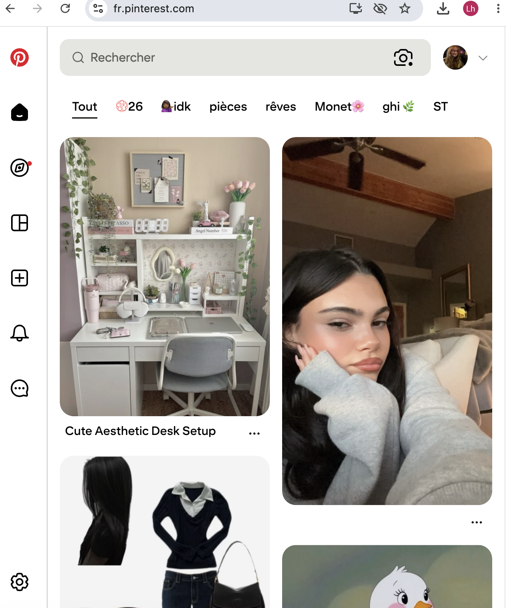
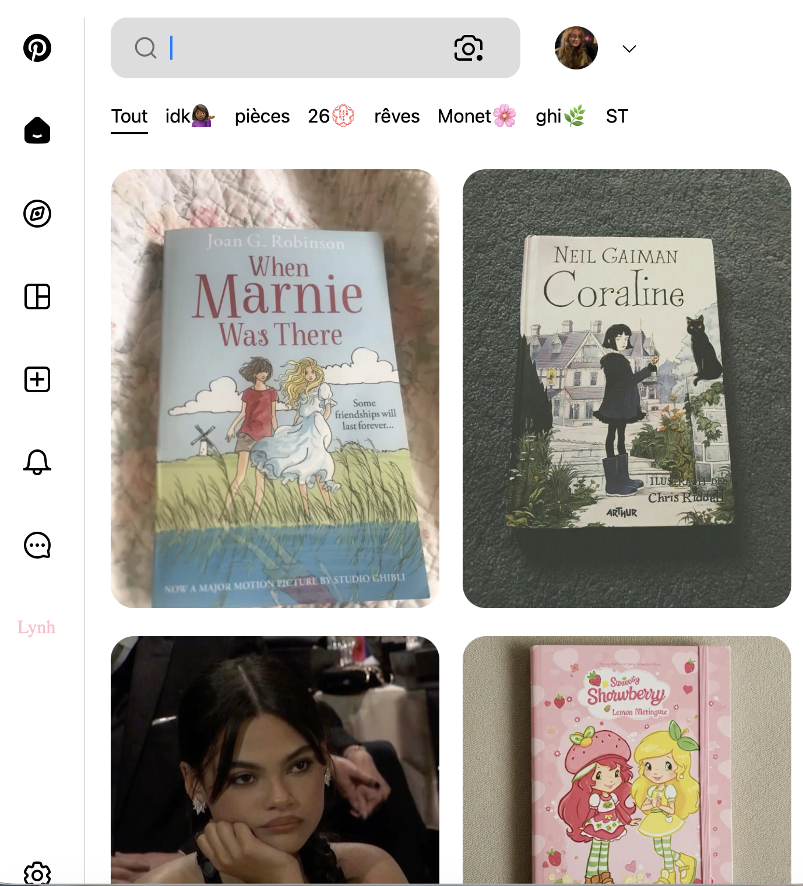
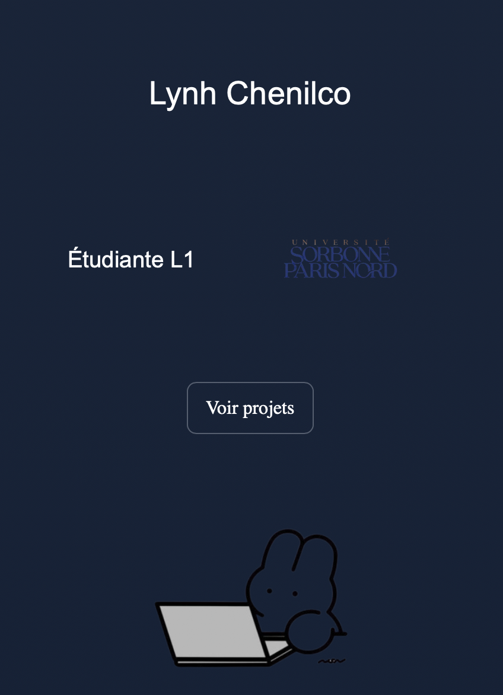
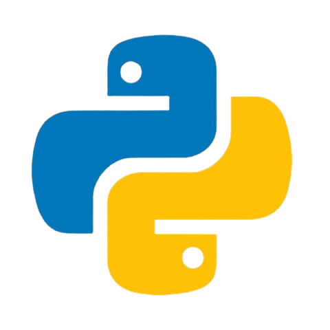
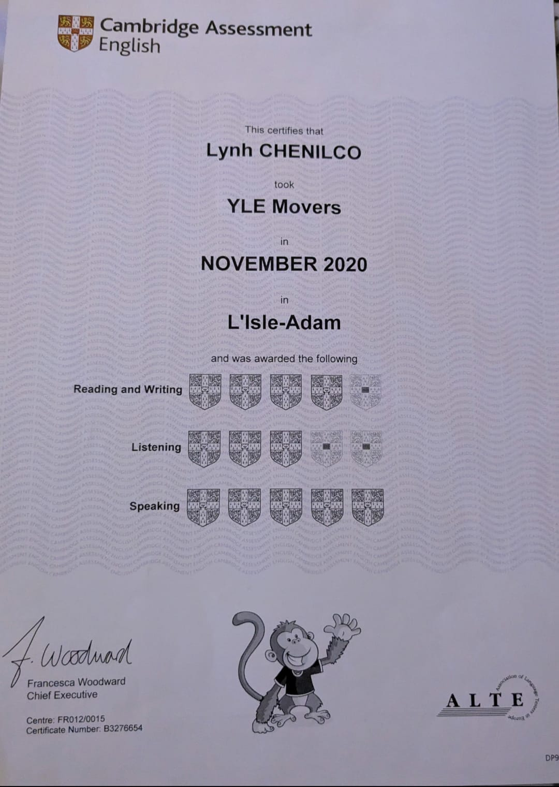
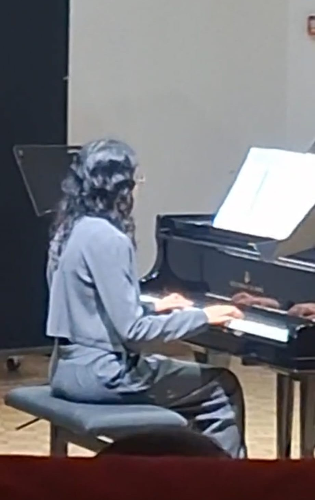
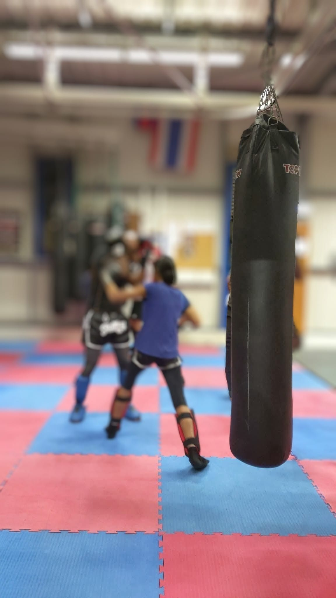

Mes projets personnels
Projet 1

référence

clone
Reproduction de ma page pinterest - HTML & CSS.
Utilisation des conteneurs Flexbox et Grid, approfondissement de la mise en page, structure de l'interface web.
(appuyer sur le clone pour l'ouvrir)
voir code
Projet 2
Développement d'une calculatrice avec la bibliothèque Tkinter
de Python - Apprentissage de la création d'une interface graphique -
approfondissement de la programmation orientée utilisateur.
voir code
Projet 3
création d'un jeu Python avec la bibliothèque Pygame -
bases simples avec import d'images -
collisions - déplacements - propriétés clavier
voir code
Projet 4
Gestionnaire bibliothèque de livres développée en python avec les bibliothèques sqlite3 et tkinter -
POO - Gestion des actions utilisateurs - Apprentissage des requêtes SQL - interface graphique
voir code
Projet 5
visualiseur de tri python - interface Tkinter - algorithmique - gestion des étapes d'éxécution
voir code
Projet 6

projet principal - création de mon portfolio - programmation html & css
voir code
Notions étudiées

Quelques travaux pratiques réalisés en Python afin de maîtriser les fondamentaux de la programmation.
Algorithmique : récursivité, tris (sélection,
insertion, fusion), recherche dichotomique.
Structures de données : manipulation des piles,
files et arbres.
Bases de données : Création de tables, manipulations
des requêtes SQL.
Systèmes : Apprentissage des commandes Linux.
En cours d'apprentissage
à propos de moi :
Je suis étudiante en première année de licence de mathématiques, passionée par les domaines du développement informatique notamment l'IA, le développement et la programmation. J'aimerais poursuivre mes études dans ce domaine afin de développer des compétences solides en technologies numériques. À terme, je voudrais intégrer une école d'ingénieurs afin de me spécialiser dans l'intelligence artificielle et le développement. Mon objectif est de participer à la création de solutions innovantes et de concevoir des systèmes capables de répondre à des problématiques concrètes.

Centres d'intérêt
- Intelligence artificielle
- Développement web
- Programmation
- Création de projets

Objectifs
- Intégrer une école d'ingénieurs après une L3
- Me spécialiser dans le développement
- Concevoir des solutions innovantes
Profil

Anglais
J'ai obtenu en 2020 le certificat YLE Movers qui m'a permis de renforcer mon intérêt pour les langues étrangères. Aujourd'hui je continue à améliorer mon anglais dans l'optique de travailler à l'international.

Piano
Je possède également beaucoup de passions en dehors des études. La musique prend une place importante dans ma vie, je prends des cours de piano et de solfège au conservatoire

Boxe
J'ai pratiqué durant sept années la boxe thaïlandaise. Cette pratique m'a permis d'améliorer ma discipline et m'a également poussée à me surpasser.
Contact